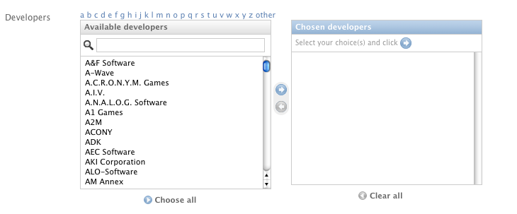
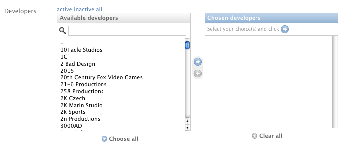
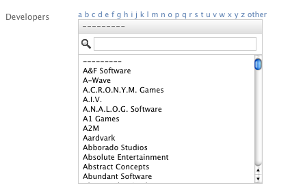
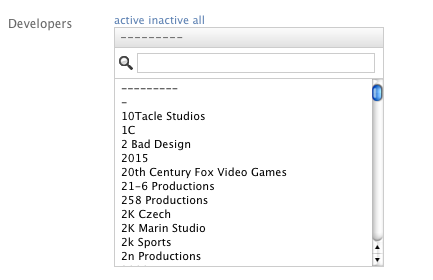

| Author: | Francesco Banconi <francesco.banconi@gmail.com> |
|---|
Theese fields may be used in a many to many or foreign key relation, where the user may want to apply filters to the listed objects, because of they being too many, or just for usability reasons.
When the user clicks on the chosen filter, an Ajax request is sent. It returns the matching elements in JSON format. The jQuery Javascript library is used.
The ajax_filtered_fields package, included in the distribution, should be placed on the Python path.
As a usage example, let's put the MyModel model in a many to many relation with the RelatedModel one, via the related_models field.
copy to your media directory the Javascript file ajax_filtered_fields.js included in media/js/ within the distribution;
add this line to your Django project's urls.py:
(r'^ajax_filtered_fields/', include('ajax_filtered_fields.urls')),
in the model form, choose the field you want to use, reference the formerly copied Javascript file, the jQuery library and the django admin's Javascript code that mutates the select widget into a selectfilter one:
from ajax_filtered_fields.forms import AjaxManyToManyField
from django.conf import settings
class MyModelForm(forms.ModelForm):
# lookups explained below
related_objects = AjaxManyToManyField(RelatedModel, lookups)
class Meta:
model = Model
class Media:
js = (
settings.ADMIN_MEDIA_PREFIX + "js/SelectBox.js",
settings.ADMIN_MEDIA_PREFIX + "js/SelectFilter2.js",
'/path/to/javascripts/jquery.js',
'/path/to/javascripts/ajax_filtered_fields.js',
)
if the form is being used outside of the auto generated django admin, you have to load several django admin's Javascript files from the page where the field will be shown:
{% load adminmedia %}
<script type="text/javascript" src="/admin/jsi18n/"></script>
<script type="text/javascript" src="{% admin_media_prefix %}js/core.js"></script>
if your form is used by non-staff users (e.g. in the frontend of your site) then <script type="text/javascript" src="/admin/jsi18n/"></script> will not work (due to permission problems).
A simple work around to resolve the problem is to directly point a url to the view by including the following line in the urls.py:
(r'^dynamic-media/jsi18n/$', 'django.views.i18n.javascript_catalog'), or (r'^dynamic-media/jsi18n/$', 'django.views.i18n.null_javascript_catalog'),
depending on whether or not you use the i18n
and then referencing the new url in place of admin/jsi18n/ in the page where you need an ajax filtered field.
if you want i18n for ManyToManyByLetter, ForeignKeyByLetter, ManyToManyByStatus, ForeignKeyByStatus, ManyToManyByRelatedField and ForeignKeyByRelatedField fields (see below for details about available fields), add 'ajax_filtered_fields' to the INSTALLED_APPS in your settings.py. The only languages currently available are English and Italian.
Base many to many form field class that displays filter choices using jQuery Ajax requests.
Usage:
from ajax_filtered_fields.forms import AjaxManyToManyField
# in the form
related_objects = AjaxManyToManyField(
model, lookups, default_index=0, select_related=None, *args, **kwargs)
Arguments:
model: the related model
lookups: a sequence of (label, lookup_dict) specifying object filtering, e.g.:
(
('active', {'is_active': True}),
('inactive', {'is_active': False}),
)
you may specify what you want in lookup_dict, give multiple filter lookups for the same choice and also set a choice that gets all unfiltered objects, e.g.:
(
('some stuff', {'field1__startswith': 'a', 'field2': 'value'}),
('all stuff', {}),
)
if only one choice is specified, then that one is applied to the listed objects and no choices links are displayed in the html output. This makes the field useful if you want to limit available choices.
New in version 0.5:
lookups can also be a callable that returns a sequence of (label, lookup_dict) (this is useful when your lookups must be evaluated at runtime).
default_index: the index of the lookup sequence that will be the default choice when the field is initially displayed. Set to None if you want the widget to start empty;
select_related: if not None, the resulting querydict is performed using select_related(select_related), allowing foreign keys to be retrieved (e.g. useful when the unicode representation of the model objects contains references to foreign keys).
You may also pass all the other args and kwargs accepted by the Django Field class.
A subclass of AjaxManyToManyField that displays filters based on initials of a field of the objects, as they are typed by the user.
Usage:
from ajax_filtered_fields.forms import ManyToManyByLetter # in the form related_objects = ManyToManyByLetter(model, field_name="name")
Arguments:
You may also pass all the other args and kwargs accepted by AjaxManyToManyField.
A subclass of AjaxManyToManyField that displays filters based on the activation status of the objects.
Usage:
from ajax_filtered_fields.forms import ManyToManyByStatus # in the form related_objects = ManyToManyByStatus(model, field_name="is_active")
Arguments:
You may also pass all the other args and kwargs accepted by AjaxManyToManyField.
Base foreign key form field class that displays filter choices using jQuery Ajax requests.
Usage:
from ajax_filtered_fields.forms import AjaxForeignKeyField
# in the form
related_objects = AjaxForeignKeyField(
model, lookups, default_index=0, select_related=None, *args, **kwargs)
It takes the same arguments as AjaxManyToManyField, refer to AjaxManyToManyField documentation for details.
A subclass of AjaxForeignKeyField that displays filters based on initials of a field of the objects, as they are typed by the user.
Usage:
from ajax_filtered_fields.forms import ForeignKeyByLetter # in the form related_objects = ForeignKeyByLetter(model, field_name="name")
It takes the same arguments as ManyToManyByLetter, refer to ManyToManyByLetter documentation for details. You may also pass all the other args and kwargs accepted by AjaxForeignKeyField.
A subclass of AjaxForeignKeyField that displays filters based on the activation status of the objects.
Usage:
from ajax_filtered_fields.forms import ForeignKeyByStatus # in the form related_objects = ForeignKeyByStatus(model, field_name="is_active")
It takes the same arguments as ManyToManyByStatus, refer to ManyToManyByStatus documentation for details. You may also pass all the other args and kwargs accepted by AjaxForeignKeyField.
Set AJAX_FILTERED_FIELDS_AUTH_DECORATOR = None in your project settings if you want to allow public access to the views.json_index view. Otherwise set it as an auth decorator callable (eg: django.contrib.auth.decorators.login_required). Default is django.contrib.admin.views.decorators.staff_member_required.
The ajax_filtered_fields.data_loaded event is triggered (by the selector the Ajax Filtered Field refers to) when the ajax request is completed, the json data is loaded and the options are fully displayed. If you need, you can bind the event easily using jQuery, e.g.:
$("#select_id").bind(ajax_filtered_fields.data_loaded, function(e) {
// do the voodoo
});